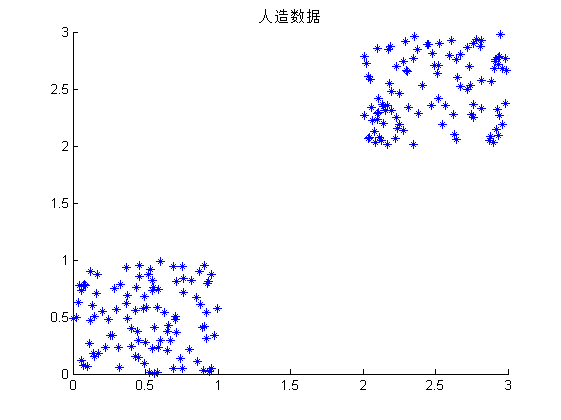
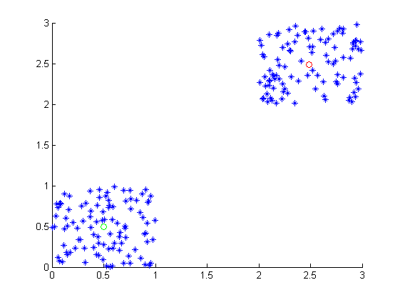

Contents
清空环境变量和命令窗
clear; clc;
人造数据
% 把左下角的类定义为第一类,右上角的类定义为第二类 % X=[1 1.5 1.7 1.7 2 2.1 2.2 2.4 2.7 3 5 5.2 5.5 5.8 5.8 6 6.3 6.4 6.5 7 % 3 3.5 4.8 4.3 4 4.5 3.2 5.4 3.8 5 7 8.5 7.8 7.2 6.4 8 7.2 5.8 8.7 9]; % X = X'; X = cell(1,2); num = 100; X{1} = [rand(num,2);(3-2)*rand(num,2)+2]; X{2} = 3*rand(2*num,2); figure; hold on; title('人造数据'); plot(X{1}(:,1),X{1}(:,2),'*');
C_SelfAdapt_fcm
[U,V,L,bestc]=C_SelfAdapt_fcm(X{1});
L
bestc
figure;
hold on;
plot(X{1}(:,1),X{1}(:,2),'*');
plot(V(1,1),V(1,2),'ro');
plot(V(2,1),V(2,2),'go');
hold off;
L =
1.0e+003 *
0 2.2180 1.5248 0
bestc =
2
